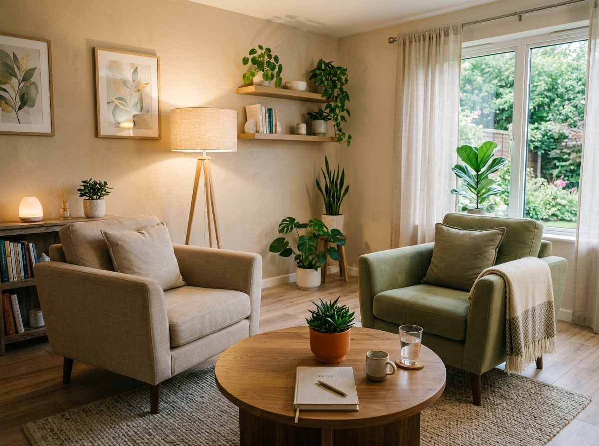

Tratamento de Ansiedade e Pânico
Manejo de pensamentos acelerados, regulação de sintomas físicos e desenvolvimento de estratégias práticas para retomar a tranquilidade no dia a dia.
TCC Baseada em EvidênciasBem-vinda(o) à Beatriz Santos Psicologia Clínica. Nosso compromisso é proporcionar um espaço seguro, ético e livre de julgamentos, auxiliando você no desenvolvimento pessoal e no alívio do sofrimento psíquico.
Com sólida formação acadêmica pela Universidade de São Paulo (USP) e especialização em Terapia Cognitivo-Comportamental (TCC), unimos rigor científico, empatia e escuta sensível para transformar desafios em caminhos de crescimento.
Oferecemos modalidades terapêuticas individuais e personalizadas, com foco nas suas demandas específicas.
Manejo de pensamentos acelerados, regulação de sintomas físicos e desenvolvimento de estratégias práticas para retomar a tranquilidade no dia a dia.
TCC Baseada em EvidênciasSuporte empático e estruturado para processar a tristeza profunda, resgatar a vitalidade e reencontrar o sentido e a motivação pessoal.
Acolhimento IndividualConstrução de uma relação mais gentil consigo mesmo, superação da autocrítica excessiva, imposição de limites saudáveis e segurança pessoal.
Desenvolvimento PessoalAprimoramento da comunicação, alinhamento de expectativas, resolução de conflitos afetivos e fortalecimento dos vínculos interpessoais.
Convivência & AfetoPrevenção do esgotamento, gestão de sobrecarga de trabalho e criação de um equilíbrio duradouro entre vida pessoal e profissional.
Saúde no TrabalhoAcompanhamento sensível para elaboração de perdas significativas, separações, mudanças de carreira ou novas fases de vida.
Apoio em Momentos de CriseAtendimento por videoconferência com máxima flexibilidade e total privacidade, de onde você estiver (em qualquer cidade do Brasil ou no exterior).
Espaço físico agradável, acolhedor e silencioso, planejado nos mínimos detalhes para garantir seu máximo conforto e sigilo.
Conheça os diferenciais que tornam o nosso atendimento uma experiência segura, transformadora e acessível.

"Investir na sua saúde mental é o primeiro passo para uma vida com mais clareza, equilíbrio e liberdade."
Todas as sessões são rigorosamente protegidas pelas normas éticas do Conselho Federal de Psicologia (CFP), garantindo sua privacidade total.
Fornecemos recibos e notas fiscais com detalhamento para que você possa solicitar reembolso junto ao seu plano de saúde / convênio.
Utilização de técnicas com eficácia comprovada pela ciência, focando em ferramentas práticas que geram resultados consistentes.
Agenda adaptável com opções de atendimento nos períodos da manhã, tarde ou noite para conciliar facilmente com sua rotina.
Um ambiente caloroso onde seus sentimentos são validados e respeitados no seu próprio ritmo, sem pressões externas.
Um processo claro, estruturado e transparente em 4 etapas para que você saiba exatamente o que esperar.
Você preenche o formulário ou envia mensagem via WhatsApp para escolher o melhor dia e horário disponível.
Um encontro inicial de 50 minutos para compreender suas principais queixas, histórico e expectativas com a terapia.
Definição conjunta de metas e estratégias personalizadas de acordo com as suas prioridades de vida.
Acompanhamento contínuo semanal, desenvolvendo recursos emocionais para lidar com os desafios de forma independente.
"A terapia com a Beatriz transformou minha forma de lidar com a ansiedade no trabalho. Hoje consigo ter calma e segurança nas minhas tomadas de decisão."
"Espaço extremamente acolhedor e profissional. Pela primeira vez me senti realmente ouvida e compreendida sem nenhum tipo de julgamento."
"As técnicas práticas de TCC me ajudaram a superar um momento difícil de luto e reconstruir minha autoestima. Recomendo de olhos fechados!"
As sessões têm duração média de 50 minutos e costumam ocorrer uma vez por semana em dia e horário fixos combinados previamente.
Você realiza o pagamento da consulta particular e recebe um recibo/nota fiscal detalhado com CRP e dados exigidos pelo seu convênio para solicitar o reembolso conforme a tabela do seu plano.
Apenas um dispositivo com câmera e microfone (celular, notebook ou tablet), conexão de internet estável e um local tranquilo onde você possa falar com privacidade.
Preencha o formulário abaixo com suas informações e preferências. Entraremos em contato com você o mais breve possível para confirmar o melhor horário.
Prefere falar agora mesmo? Entre em contato pelos canais diretos abaixo:
Av. Paulista, 1000 - Conj. 52
Bela Vista, São Paulo - SP
Segunda a Sexta: 08:00 às 21:00
Sábados: 08:00 às 13:00